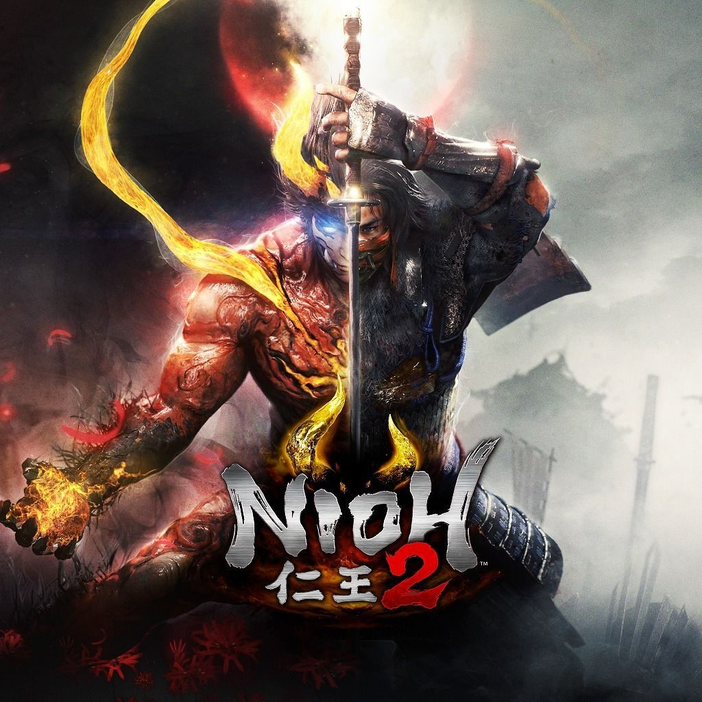
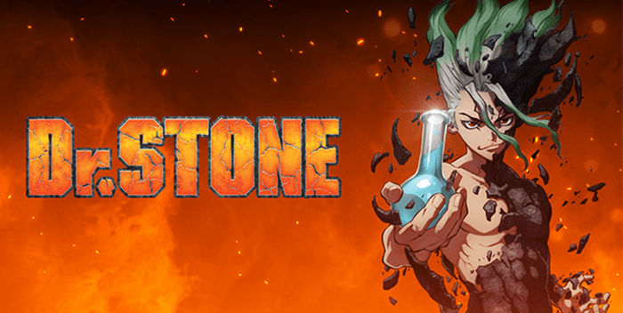
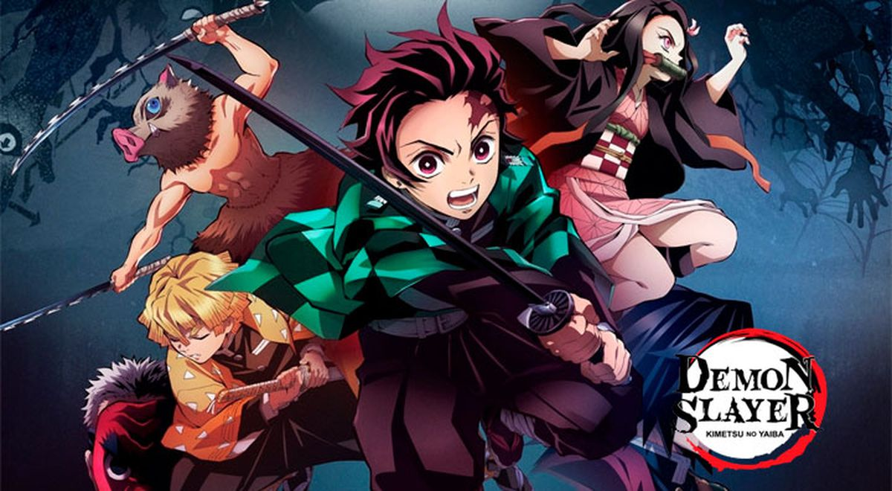
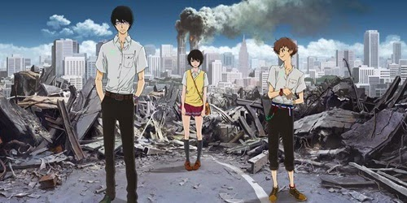

En la última aventura del universo de Spider-Man de Marvel, el adolescente Miles Morales se adapta a su nuevo barrio al tiempo que sigue los pasos de Peter Parker, su mentor, y se convierte en un nuevo Spider-Man. ... Para salvar la Nueva York de Marvel, Miles debe tomar el relevo de Spider-Man y estar a la altura.
Nioh 2

Nioh 2 es la secuela del celebrado RPG de acción a cargo de Team Ninja y Koei para PlayStation 4 en el que el samurái William Adams debe enfrentarse a implacables yokais que pretenden acabar con su vida.
Doom Eternal
Los jugadores toman el papel de Doom Slayer, un antiguo guerrero que lucha contra las fuerzas demoníacas del Infierno desde una perspectiva en primera persona. ... Armamentos como misiles, lanzagranadas y lanzallamas también se pueden unir a la armadura de Doom Slayer.
Dr. Stone

El día que Taiju Oki, un adolescente fuerte pero algo palurdo, se decide por fin a declararle su amor a Yuzuriha, sucede algo radical e inesperado: justo un segundo antes de la declaración, causas desconocidas llevan al total de la humanidad a convertirse instantáneamente en piedra. Después de 3.689 años y 158 días, durante los que ha luchado por no perder la consciencia y desaparecer, Taiju finalmente emerge de la piedra y vuelve a la normalidad.
Kimetsu no yaiba

Tanjiro Kamado es un chico inteligente con un buen olfato y corazón que vivía con su familia en las montañas y ganaba dinero vendiendo carbón, pero todo cambia cuando su familia es atacada y asesinada por un demonio (oni). Tanjiro y su hermana Nezuko son los únicos supervivientes del incidente, aunque su hermana Nezuko fue transformada en un demonio, mostrando signos de emoción y pensamiento humanos.Tanjiro sera reclutado por Urokodaki para convertirse también en un asesino de demonios y así comienza su búsqueda para ayudar a su hermana a volverse humana nuevamente.
Zankyō no Terror

Un día de verano… De repente, un ataque bomba de un grupo terrorista azota Tokio. Los culpables de tal acto que ha despertado a toda una nación complaciente, fueron dos simples muchachos. Ahora a los culpables se les conoce como “Sphinx” y dan comienzo a un juego a gran escala que involucra a todo Japón.
musica
La musica es de lo mas esencial en un videojuego o una serie, ya que se encarga de representar que tipo de ambiente
que nos encontramos o el tipo de situacion del momento. En el siguiente listado te mostraremos titulos con canciones o soundtracks
memorables.